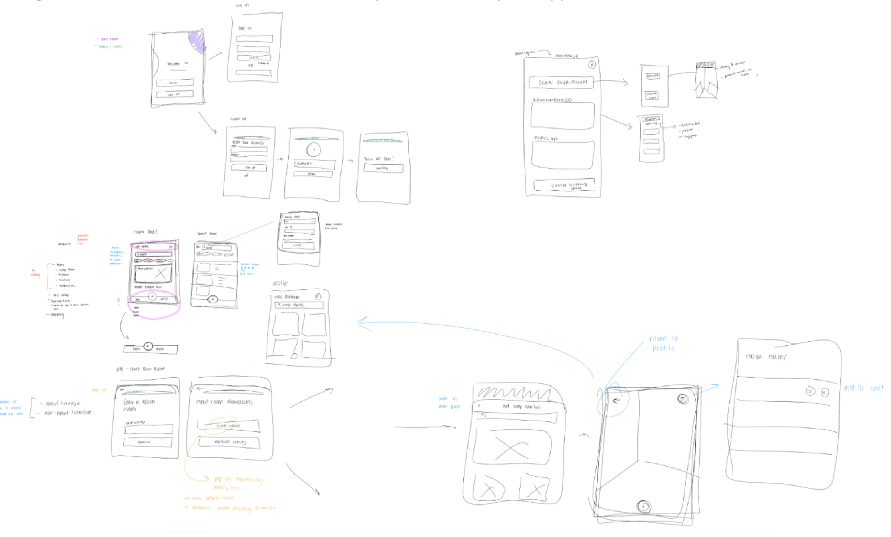
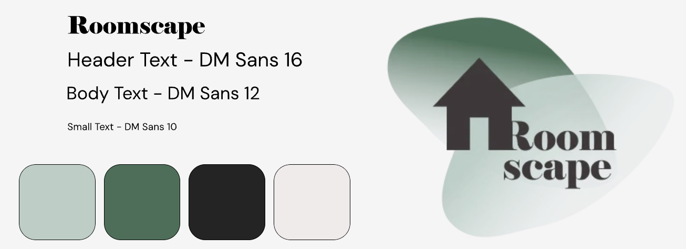
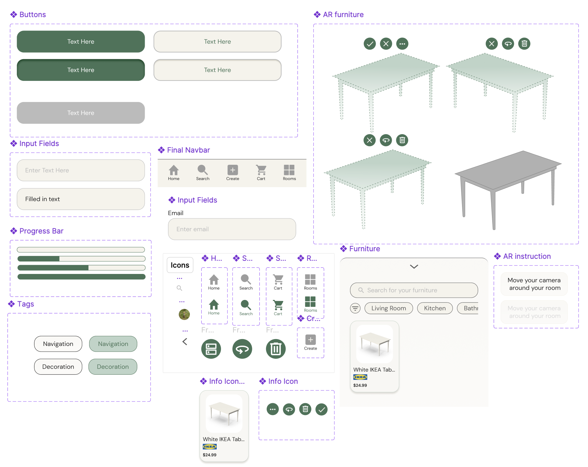

Roomscape - AR Shopping Experience
Leveraging AR design to enhance spatial visualization and empower confident decision-making in online furniture retail.
Overview
We were tasked to address a problem in Retail.
Project description
Roomscape was awarded 1st place at the Project Teams Demo Day hosted by Design at UCI, a student-led organization that brings together aspiring UI/UX and graphic designers at the University of California, Irvine. The theme for this design challenge was Retail, so my team chose to develop a product that could reimagine how users shop for furniture online.
My role as the UI/UX Designer entailed conducting the user research, translating the insights into actionable items, then developing the workable prototypes for Demo Day. I particularly contributed to the Search and AR Flows.
Design process
Step 1
Discover
Step 2
Define
Step 3
Design
Step 4
Test
Step 5
Deliver
Problem
In the world of online furniture shopping and interior design, customers struggle to visualize furniture in their living spaces, hindering confident online purchases.
Traditional platforms lack immersive features, causing increased returns and diminished satisfaction.
Guiding Question
How do we create a mobile application that allows customers to visualize furniture in their own homes, and increase confidence in their purchases?
Solution
A mobile furniture shopping app that uses augmented reality (AR) to help users visualize furniture in their actual living spaces before making a purchase.
We leveraged AR design to enhance spatial visualization and thus empower confident decision-making in online furniture retail.
Research
Understanding our stakeholders
User surveys
We conducted a survey with 71 participants to understand user behavior and identify market opportunities.
98.6%
IKEA
74.6%
Target/Walmart
71.8%
Amazon
Most of our users shopped at affordable retailers such as these, but 78.9% still struggled to find pieces that matched their space and style. A key challenge was not being able to visualize how furniture would look or fit in their homes, leading to low confidence and higher return rates. Users wanted a better way to preview furniture accurately while staying within their budget and aesthetic.
Competitive analysis

To better understand the landscape of furniture and interior design apps, we conducted a competitive analysis of five key platforms: IKEA, Magicplan, DecorMatters, Living Spaces See in Your Room, and Foyr Neo.
Overall findings
- Augmented Reality (AR) technology is still very new to the e-commerce space, but people are eager to try it. It has not been utilized in retail, making it a less competitive market.
- In-person shopping was foound to be more popular than online; people prefer to visualize furniture in a room rather than pictures online.
- People want to look for the most affordable deals when finding furniture, so they will promarily shop at companies such as Target, Walmart, etc.
Ideation

Create an app that helps users visualize furniture in their own space

Help users curate a specific aesthetic, using AR features to bring that dream to reality

Allow users to compare across different brands of popular furniture
Potential Solutions
Comparing products across different brands?
Organize products by brand to directly compare
Finding the most affordable option?
Using filters and comparison components
Increasing confidence to purchase furniture?
Testing furniture in their own homes?
Using AR features to allow users to visualize furniture in their home
Initial Designs
Putting it all together
With the insights we gathered from user interviews and competitor analysis, we then had a better understanding of the product scope and features we wanted to implement.
User flow

Low-fidelity wireframes
Early sketches helped us test layout feasibility and identify what to streamline before building out full prototypes. We specifically focused on three critical elements: AR camera integration with clear onboarding instructions, aesthetic filtering by style and color, and product comparisons across brands.

User Testing
Results of our user testing
Feedback
We conducted our user testing on 10 individuals, ranging from ages 20-25.
- Button functionality: Some interactions weren’t intuitive, so we cleaned up redundant buttons and added clearer labels.
- Navigation clarity: Users had trouble accessing key features, so we added a bottom nav bar and refined filter UI.
- AR unfamiliarity: 53% of users hadn’t used AR before, so we implemented a sample room and a guided tutorial to ease the onboarding process.
Iteration
![Table of improvements made after testing. Button functionality: made back buttons functional and removed non-functional buttons for features we did not have time to implement. User flow: on the shopping cart page, moved buttons near the cart summary to avoid extra scrolling, and added a central navigation bar for consistency and easy access to all features. Navigation: fixed prototyping bugs with scrolling and corrected redirects. AR/VR: added simple instructions for the AR/VR component and a demo room to showcase key features.](roomscape/iteration.png)
Final Designs
Branding

Building a Consistent Visual Language
To maintain consistent visual design throughout the design process, we continually updated a UI component library based off our Roomscape branding.

The final product!
AR Flow
Create an AR model of your own space to demo a furniture of your choice.
Shopping Flow
Search for different pieces of furniture across various brands and prices to either add to cart or add to room to preview it in AR.
Reflection
Looking back
Roomscape was my first team-based product design challenge, where I contributed to the research, wireframing, visual design, and usability testing.
Through this experience, I learned how to:
Turning insights into action.
Translate raw user survey insights into clear, actionable design decisions.
Collaborating across different disciplines.
Collaborate and adapt effectively within a team of both designers and developers, especially in regards to the unfamiliarity with AR design.
Balancing aesthetics and usability.
Balance visual appeal with usability, especially when working with emerging technologies like AR.
Communicating design decisions.
Present design rationale to both technical teammates and non-design stakeholders.
Future iterations
If I had more time, I would want to implement discount notifications to help users discover more affordable options and make the app more inclusive by introducing voice support for blind or visually impaired users, with a stronger overall focus on accessibility.